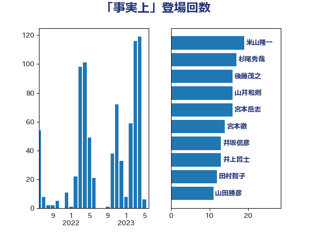

単語「事実上」

| 米山隆一 | 立憲民主党 | 19 回 |
| 杉尾秀哉 | 立憲民主党 | 17 回 |
| 後藤茂之 | 自由民主党 | 16 回 |
| 山井和則 | 立憲民主党 | 16 回 |
| 宮本岳志 | 日本共産党 | 16 回 |
| 宮本徹 | 日本共産党 | 14 回 |
| 井坂信彦 | 立憲民主党 | 13 回 |
| 井上哲士 | 日本共産党 | 13 回 |
| 田村智子 | 日本共産党 | 12 回 |
| 山田勝彦 | 立憲民主党 | 11 回 |
| 山添拓 | 日本共産党 | 11 回 |
| 塩川鉄也 | 日本共産党 | 10 回 |
| 芳賀道也 | 国民民主党 | 9 回 |
| 小川淳也 | 立憲民主党 | 9 回 |
| 吉良よし子 | 日本共産党 | 9 回 |
| 篠原豪 | 立憲民主党 | 8 回 |
| 玉木雄一郎 | 国民民主党 | 8 回 |
| 枝野幸男 | 立憲民主党 | 8 回 |
| 松原仁 | 立憲民主党 | 8 回 |
| 古川元久 | 国民民主党 | 8 回 |
| 仁比聡平 | 日本共産党 | 8 回 |
| 中島克仁 | 立憲民主党 | 8 回 |
| 足立康史 | 日本維新の会 | 7 回 |
| 音喜多駿 | 日本維新の会 | 6 回 |
| 長妻昭 | 立憲民主党 | 6 回 |
| 重徳和彦 | 立憲民主党 | 6 回 |
| 穀田恵二 | 日本共産党 | 6 回 |
| 田中健 | 国民民主党 | 6 回 |
| 浜田聡 | NHK党 | 6 回 |
| 本村伸子 | 日本共産党 | 6 回 |
| 早稲田ゆき | 立憲民主党 | 6 回 |
| 山岸一生 | 立憲民主党 | 6 回 |
| 小西洋之 | 立憲民主党 | 6 回 |
| 高橋千鶴子 | 日本共産党 | 5 回 |
| 鈴木敦 | 国民民主党 | 5 回 |
| 西田昌司 | 自由民主党 | 5 回 |
| 西村智奈美 | 立憲民主党 | 5 回 |
| 紙智子 | 日本共産党 | 5 回 |
| 櫛渕万里 | れいわ新選組 | 5 回 |
| 打越さく良 | 立憲民主党 | 5 回 |
| 川田龍平 | 立憲民主党 | 5 回 |
| 山本太郎 | れいわ新選組 | 5 回 |
| 吉田統彦 | 立憲民主党 | 5 回 |
| 北神圭朗 | 無所属 | 5 回 |
| 倉林明子 | 日本共産党 | 5 回 |
| 金村龍那 | 日本維新の会 | 4 回 |
| 藤岡隆雄 | 立憲民主党 | 4 回 |
| 田村憲久 | 自由民主党 | 4 回 |
| 柚木道義 | 立憲民主党 | 4 回 |
| 有村治子 | 自由民主党 | 4 回 |
| 安江伸夫 | 公明党 | 4 回 |
| 大塚耕平 | 国民民主党 | 4 回 |
| 伊藤岳 | 日本共産党 | 4 回 |
| 上田清司 | 国民民主党 | 4 回 |
| 鈴木義弘 | 国民民主党 | 3 回 |
| 野田聖子 | 自由民主党 | 3 回 |
| 西岡秀子 | 国民民主党 | 3 回 |
| 藤巻健太 | 日本維新の会 | 3 回 |
| 舩後靖彦 | れいわ新選組 | 3 回 |
| 福山哲郎 | 立憲民主党 | 3 回 |
| 石田昌宏 | 自由民主党 | 3 回 |
| 渡辺創 | 立憲民主党 | 3 回 |
| 末次精一 | 立憲民主党 | 3 回 |
| 後藤祐一 | 立憲民主党 | 3 回 |
| 岸田文雄 | 自由民主党 | 3 回 |
| 山際大志郎 | 自由民主党 | 3 回 |
| 山崎誠 | 立憲民主党 | 3 回 |
| 小野泰輔 | 日本維新の会 | 3 回 |
| 小宮山泰子 | 立憲民主党 | 3 回 |
| 大串博志 | 立憲民主党 | 3 回 |
| 城井崇 | 立憲民主党 | 3 回 |
| 吉川元 | 立憲民主党 | 3 回 |
| 古川俊治 | 自由民主党 | 3 回 |
| 勝目康 | 自由民主党 | 3 回 |
| 伊東信久 | 日本維新の会 | 3 回 |
| たがや亮 | れいわ新選組 | 3 回 |
| おおつき紅葉 | 立憲民主党 | 3 回 |
| 高橋光男 | 公明党 | 2 回 |
| 高木かおり | 日本維新の会 | 2 回 |
| 馬場伸幸 | 日本維新の会 | 2 回 |
| 長友慎治 | 国民民主党 | 2 回 |
| 鈴木宗男 | 日本維新の会 | 2 回 |
| 野間健 | 立憲民主党 | 2 回 |
| 野田佳彦 | 立憲民主党 | 2 回 |
| 輿水恵一 | 公明党 | 2 回 |
| 赤嶺政賢 | 日本共産党 | 2 回 |
| 自見はなこ | 自由民主党 | 2 回 |
| 羽田次郎 | 立憲民主党 | 2 回 |
| 緒方林太郎 | 無所属 | 2 回 |
| 磯崎仁彦 | 自由民主党 | 2 回 |
| 石破茂 | 自由民主党 | 2 回 |
| 田村貴昭 | 日本共産党 | 2 回 |
| 田島麻衣子 | 立憲民主党 | 2 回 |
| 玄葉光一郎 | 立憲民主党 | 2 回 |
| 牧野たかお | 自由民主党 | 2 回 |
| 片山さつき | 自由民主党 | 2 回 |
| 滝波宏文 | 自由民主党 | 2 回 |
| 源馬謙太郎 | 立憲民主党 | 2 回 |
| 浅田均 | 日本維新の会 | 2 回 |
| 浅尾慶一郎 | 自由民主党 | 2 回 |
| 泉田裕彦 | 自由民主党 | 2 回 |
| 河野太郎 | 自由民主党 | 2 回 |
| 池畑浩太朗 | 日本維新の会 | 2 回 |
| 水岡俊一 | 立憲民主党 | 2 回 |
| 櫻井周 | 立憲民主党 | 2 回 |
| 森屋隆 | 立憲民主党 | 2 回 |
| 梅谷守 | 立憲民主党 | 2 回 |
| 柳ヶ瀬裕文 | 日本維新の会 | 2 回 |
| 杉久武 | 公明党 | 2 回 |
| 本庄知史 | 立憲民主党 | 2 回 |
| 木村英子 | れいわ新選組 | 2 回 |
| 斎藤洋明 | 自由民主党 | 2 回 |
| 斎藤嘉隆 | 立憲民主党 | 2 回 |
| 山本剛正 | 日本維新の会 | 2 回 |
| 小沢雅仁 | 立憲民主党 | 2 回 |
| 小林鷹之 | 自由民主党 | 2 回 |
| 小山展弘 | 立憲民主党 | 2 回 |
| 大西健介 | 立憲民主党 | 2 回 |
| 大石あきこ | れいわ新選組 | 2 回 |
| 大岡敏孝 | 自由民主党 | 2 回 |
| 友納理緒 | 自由民主党 | 2 回 |
| 勝部賢志 | 立憲民主党 | 2 回 |
| 加藤勝信 | 自由民主党 | 2 回 |
| 佐々木さやか | 公明党 | 2 回 |
| 伊藤俊輔 | 立憲民主党 | 2 回 |
| 齋藤健 | 自由民主党 | 1 回 |
| 高村正大 | 自由民主党 | 1 回 |
| 高木真理 | 立憲民主党 | 1 回 |
| 馬場雄基 | 立憲民主党 | 1 回 |
| 青木愛 | 立憲民主党 | 1 回 |
| 青山繁晴 | 自由民主党 | 1 回 |
| 階猛 | 立憲民主党 | 1 回 |
| 阿部弘樹 | 日本維新の会 | 1 回 |
| 阿部司 | 日本維新の会 | 1 回 |
| 門山宏哲 | 自由民主党 | 1 回 |
| 鎌田さゆり | 立憲民主党 | 1 回 |
| 鈴木庸介 | 立憲民主党 | 1 回 |
| 鈴木俊一 | 自由民主党 | 1 回 |
| 金子俊平 | 自由民主党 | 1 回 |
| 野田国義 | 立憲民主党 | 1 回 |
| 遠藤良太 | 日本維新の会 | 1 回 |
| 辻元清美 | 立憲民主党 | 1 回 |
| 赤澤亮正 | 自由民主党 | 1 回 |
| 谷田川元 | 立憲民主党 | 1 回 |
| 谷合正明 | 公明党 | 1 回 |
| 谷公一 | 自由民主党 | 1 回 |
| 西銘恒三郎 | 自由民主党 | 1 回 |
| 西村康稔 | 自由民主党 | 1 回 |
| 落合貴之 | 立憲民主党 | 1 回 |
| 菅直人 | 立憲民主党 | 1 回 |
| 美延映夫 | 日本維新の会 | 1 回 |
| 緑川貴士 | 立憲民主党 | 1 回 |
| 細田健一 | 自由民主党 | 1 回 |
| 笠井亮 | 日本共産党 | 1 回 |
| 窪田哲也 | 公明党 | 1 回 |
| 秋葉賢也 | 自由民主党 | 1 回 |
| 福島伸享 | 無所属 | 1 回 |
| 福島みずほ | 社会民主党 | 1 回 |
| 石川大我 | 立憲民主党 | 1 回 |
| 石垣のりこ | 立憲民主党 | 1 回 |
| 石井浩郎 | 自由民主党 | 1 回 |
| 田村まみ | 国民民主党 | 1 回 |
| 牧山ひろえ | 立憲民主党 | 1 回 |
| 牧原秀樹 | 自由民主党 | 1 回 |
| 熊谷裕人 | 立憲民主党 | 1 回 |
| 浜田靖一 | 自由民主党 | 1 回 |
| 浅野哲 | 国民民主党 | 1 回 |
| 浅川義治 | 日本維新の会 | 1 回 |
| 泉健太 | 立憲民主党 | 1 回 |
| 河西宏一 | 公明党 | 1 回 |
| 江田憲司 | 立憲民主党 | 1 回 |
| 水野素子 | 立憲民主党 | 1 回 |
| 森山浩行 | 立憲民主党 | 1 回 |
| 梅村みずほ | 日本維新の会 | 1 回 |
| 柴田巧 | 日本維新の会 | 1 回 |
| 松川るい | 自由民主党 | 1 回 |
| 本田顕子 | 自由民主党 | 1 回 |
| 日下正喜 | 公明党 | 1 回 |
| 斉藤鉄夫 | 公明党 | 1 回 |
| 掘井健智 | 日本維新の会 | 1 回 |
| 徳永久志 | 立憲民主党 | 1 回 |
| 平木大作 | 公明党 | 1 回 |
| 島村大 | 自由民主党 | 1 回 |
| 岩屋毅 | 自由民主党 | 1 回 |
| 岡田克也 | 立憲民主党 | 1 回 |
| 山谷えり子 | 自由民主党 | 1 回 |
| 山田美樹 | 自由民主党 | 1 回 |
| 山田宏 | 自由民主党 | 1 回 |
| 山田太郎 | 自由民主党 | 1 回 |
| 山本博司 | 公明党 | 1 回 |
| 山岡達丸 | 立憲民主党 | 1 回 |
| 山下芳生 | 日本共産党 | 1 回 |
| 小里泰弘 | 自由民主党 | 1 回 |
| 小熊慎司 | 立憲民主党 | 1 回 |
| 小沼巧 | 立憲民主党 | 1 回 |
| 小池晃 | 日本共産党 | 1 回 |
| 奥野総一郎 | 立憲民主党 | 1 回 |
| 大島敦 | 立憲民主党 | 1 回 |
| 大塚拓 | 自由民主党 | 1 回 |
| 大口善徳 | 公明党 | 1 回 |
| 塩村あやか | 立憲民主党 | 1 回 |
| 塩崎彰久 | 自由民主党 | 1 回 |
| 堀井巌 | 自由民主党 | 1 回 |
| 國重徹 | 公明党 | 1 回 |
| 国定勇人 | 自由民主党 | 1 回 |
| 吉良州司 | 無所属 | 1 回 |
| 北側一雄 | 公明党 | 1 回 |
| 佐藤茂樹 | 公明党 | 1 回 |
| 佐藤正久 | 自由民主党 | 1 回 |
| 伴野豊 | 立憲民主党 | 1 回 |
| 伊藤渉 | 公明党 | 1 回 |
| 伊藤孝恵 | 国民民主党 | 1 回 |
| 伊波洋一 | 無所属 | 1 回 |
| 井林辰憲 | 自由民主党 | 1 回 |
| 中条きよし | 日本維新の会 | 1 回 |
| 中川正春 | 立憲民主党 | 1 回 |
| 上田勇 | 公明党 | 1 回 |